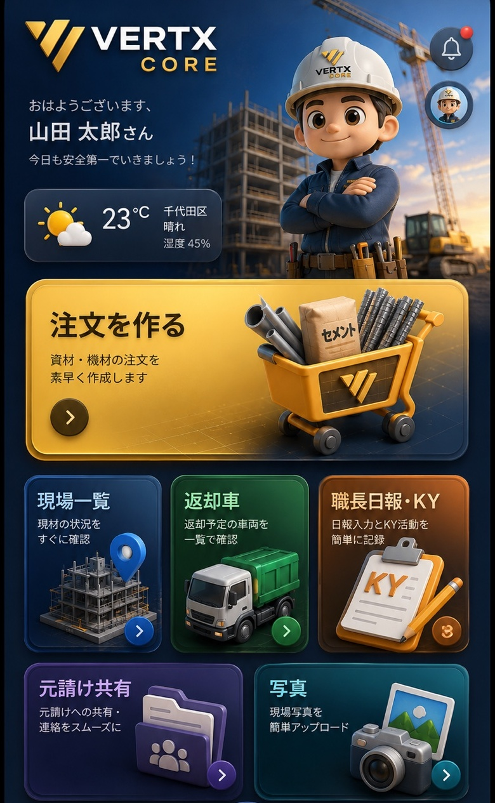

- 資材注文
- 重量・トラック判定
- 基本履歴

VERTX CORE
おはようございます、
ユーザー
ONLINE
☀️
--°C
現在地天気を取得中湿度 --%
SITE
現場を選択
登録現場
ORDER
資材注文
FIELD ORDER資材名の「•••」から、この会社だけの呼び方に変更できます
合計0点
重量0.0kg / 0.00t
FAVORITE
お気に入り
CONFIRM
注文確認
注文内容
合計数量0点
推定重量0.0kg
乗る車軽トラ
添付図面なし
発注先
CORE CHECK
自動注文漏れチェック
HISTORY
注文履歴
MATERIAL MASTER
資材マスタ
資材を追加
登録資材
DRAWING
図面アップロード
図面を追加
PDF / JPG / PNG を端末内に保存します。アップロードした図面は注文に添付できます。
PDF / JPG / PNG を複数まとめて選択できます。保存済み図面
AI DRAWING ANALYSIS
AI図面解析
図面をAIが読んで資材候補を作る
保存済みのPDF・JPG・PNGをAIへ送信し、枠組・単管を中心に図面上で確認できる情報から資材候補を作ります。AI結果は発注確定ではありません。数量・納まりは必ず人が確認してください。
ここから図面を追加
先に「図面アップロード」へ戻らなくても、AI解析画面からPDF・JPG・PNGを複数追加できます。
解析する図面複数選択OK
図面を読み込み中…
AI解析結果
図面を選んで「AIで図面を解析」を押してください
AIを使わず寸法から候補を作る
条件を入力して候補を作成できます
SITE STOCK
現場在庫
※ 注文ステータスを「納品済」にすると、その注文資材はこの現場在庫へ自動加算されます。
現場別 在庫重量
登録済み
SHORTAGE
不足材を追加
現場から最短で追加注文
資材と数量を選ぶだけで注文カートに追加します。
QUICK SET
よく使うセット
DISPATCH
配車予定
注文から自動作成
希望日・推奨車両・注文ステータスを一覧で確認できます。
AI DRAWING COMPARE
AI図面比較
比較結果
旧図面と新図面を選択してください
VOICE ORDER
音声オーダー
例：「アンチ1.8を50枚、ブレス1.8を25本、枠600を30枚」
まだ入力されていません
PHOTO AI
現場写真AI
写真を選択してください
SITE DASHBOARD
現場ダッシュボード
ANALYTICS
利用分析
TEAM ACCESS
メンバー・権限
役割ごとの招待URL
渡すURLを分けるだけで、参加時の権限を自動設定します。あとから社長・管理者が変更することもできます。
SUBSCRIPTION
プラン
VERTX CORE MEMBERSHIP
契約までCOREの中で完結。
Standard / Pro はStripe Checkoutへ接続。支払い完了後、会社プランを自動更新します。
- 自動在庫
- 複数ユーザー
- 配車・現場管理
- 図面・写真AI
- 自社学習AI
- 高度分析
現在の契約を確認中…
COMPANY
会社設定
会社名-
会社コード-
担当者-
クラウド共有
ログインした会社の現場・注文履歴・在庫・お気に入り・資材マスタ・図面をクラウド同期します。会社が違えばデータは見えません。
RETURN CONTROL
返却管理
RETURN FLOW
返した分だけ在庫から減らす。
現場・資材・数量を選ぶだけ。返却履歴も残ります。
現在庫 0
返却履歴
LOAD CHECK
返却重量計算
RETURN LOAD
積む前に、重量を確認。
返却する資材と数量を入れると総重量・選択した車両の残り積載目安を自動計算します。
積載リスト
重要
ここで出るのは資材重量の計算目安です。実際に積めるかは車検証の最大積載量、荷台寸法、長物、荷重バランス、固定方法も必ず確認してください。
SITE PROFIT
現場原価
原価明細
SITE ACCESS
現場QR
ONE SCAN
QRを現場ごとに。
読み込むとその現場を選択した状態でVERTX COREを開きます。
現場を選んでQRを作成してください
SUPPLIERS
発注先管理
使える項目：{site} {date} {items} {weight} {truck} {memo}
登録済み
FIELD BRIEF
職長日報・KY
今日の現場を1画面で引継ぎ
RISK ASSESSMENT
KY・危険予知
危険を最大3件まで入力。頻度×重大性からリスクを自動表示します。必要な項目だけでOKです。
危険 01リスク 1
危険 02リスク 1
危険 03リスク 1
1–2 低3–4 注意6–9 高
引継ぎ写真メモ
必要な時だけ写真を選んで、現場の注意箇所に直接書き込めます。KYは上の入力式が基本です。
最近の日報
SITE ALBUM
現場アルバム
1回最大5枚。スマホ向けに自動圧縮します。
AUDIT
操作履歴
WHO / WHEN / WHAT
変更した人と時間を残す。
注文・資材設定・配車・返却などの主要操作を会社ごとに記録します。
OWNER TEST LAB
開発者テスト
SAFE ROLE PREVIEW
1台のiPhoneで、全権限を確認。
DB上の社長権限は変えず、画面と操作権限だけを管理者・職長・閲覧として疑似表示します。
テストモードについて
本当のメンバー権限は変更されません。テスト後は上部のTEST MODEバーから通常表示へ戻してください。
MANUAL
使い方マニュアル
VERTX CORE GUIDE
使いたい項目だけ開けばOK。
最初の画面は短くしました。下の7項目から、今やりたいことだけタップしてください。
最短スタート注文はこの3つだけ
1現場を選ぶSITES
2資材を選ぶORDER
3発注する注文確認
01現場を作る・選ぶ
- 下の「SITES」を押す
- 現場名を入れて「＋ 現場を追加」
- 使う現場をタップ
入力例：〇〇ビル新築工事
詳しく見る
会社名と担当者名は最初の1回だけ登録します。同じ端末では前回の会社・現場を記憶します。
02資材を注文する
- 「ORDER」を押す
- 資材を探して「＋」で数量入力
- 「注文確認へ」→ 内容確認 → 発注
検索例：枠610 / 4板 / かんざし / 羽子板 / ラッセルブラ
詳しく見る
資材名を変える：資材右上の「••• 編集」。会社ごとに名前・単重・カテゴリーを変更できます。
お気に入り：☆を押すと上から探しやすくなります。
職長の注文：承認待ちになり、社長・管理者が承認します。
03AIを使う
- 下の「AI」を押す
- 図面・写真を選ぶ
- 解析結果を確認して注文へ反映
重要：AIの数量は候補です。必ず人が確認してください。
詳しく見る
図面AI：平面図・立面図などから資材候補を出します。
写真AI：現場写真から資材候補を出します。
音声注文：「枠610を30、ブレス1829を20」のように話して入力できます。
確定時の修正内容は、その会社の次回解析の参考にします。
04返却・重量・トラック
- MORE →「返却重量計算」
- 資材と数量を追加
- 3t・4tなどを選び、重量確認 → 返却車を手配
例：枠610×150、ブレス1829×200、アンチ1.8×150
詳しく見る
搬入・返却予定は配車画面にまとまります。時間を入れると職長日報にも表示されます。
返却記録を間違えた時は履歴から取り消せます。
積載は必ず車検証の最大積載量を優先してください。
05職長日報・KY・引継ぎ
- MORE →「職長日報・KY」
- 作業者・作業内容・現場状況を入力
- KYと引継ぎを入れて保存
作業者例：〇〇太郎 / △△次郎 / 応援1名
詳しく見る
KY：危険・原因・頻度・重大性・対策を入力。最大3件。
引継ぎ写真：写真を選び、2本指でズーム・移動。ペン・丸・矢印・文字で書き込めます。
搬入搬出：その日の配車予定が日報に自動表示されます。
06社員・職長を招待する
- MORE →「メンバー・権限」
- 使わせたい権限のURLをコピー
- 本人へLINE等で送る
社長のiPhone1台で確認する時は「開発者テスト」で権限を疑似切替できます。
詳しく見る
管理者：管理・承認も可能。
職長：現場・注文中心。
閲覧：基本見るだけ。
職長の注文は社長・管理者の承認待ちになります。
07元請けへ現場を共有する
- MORE →「元請け向け共有」
- 現場とお知らせを選ぶ
- URLを発行して元請けへ送る
現場状況・最新写真5枚・搬入予定・返却予定・注文内容を見せられます。
詳しく見る
共有するKY：最新日報の重点安全目標・危険ポイント・対策だけを表示します。
外に出さない情報：社内メモ、原価、作業者名、引継ぎ先。
URLを更新すれば、元請けは同じ共有ページで最新状況を確認できます。
＋その他の機能も見る
お気に入り
ORDERの☆を押す。よく使う資材を探しやすくできます。
注文履歴・再注文
HOME → 注文履歴。過去注文を見て、同じ内容をもう一度使えます。
現場在庫
MORE/HOME → 現場在庫。納品済み資材の残数を確認します。
不足材
不足している資材だけ追加して、そのまま注文へ進めます。
よく使うセット
毎回同じ組み合わせをセット保存して、次から一発で呼び出します。
配車予定
搬入と返却の日時・車両を1つの一覧で確認します。
現場アルバム
施工前・施工中・完了・搬入・返却の写真を現場ごとに保存します。
現場QR
現場専用QRを作り、読み取るとその現場をすぐ開けます。
発注先管理
リース会社・資材屋と送信用テンプレを登録します。
資材マスタ
新しい資材の追加や単重の確認に使います。普段の名前変更はORDERの「••• 編集」が早いです。
図面比較
複数図面をAIで見比べて、変更点や資材候補を確認します。
写真AI
現場写真から資材候補を出します。結果は必ず人が確認してください。
音声注文
例「枠610を20、ブレス1829を30」のように話して数量候補を作ります。
会社設定
会社情報・会社切替・招待関連を確認します。
操作履歴
誰がいつ何を変更したか確認できます。
開発者テスト
Ownerだけ。iPhone1台で管理者・職長・閲覧の見え方を試せます。
プラン
Free / Standard / Proの契約状態を確認します。
困った時
各ページ右上の「💬」を押すと、その画面だけの使い方が出ます。
資材名変更：ORDER → 資材右上「••• 編集」
返却：MORE → 返却重量計算
日報：MORE → 職長日報・KY
最後に1つだけ
AI・重量・車両判定は補助です。発注数量・施工・安全・積載の最終確認は人が行ってください。
CONTROL CENTER
その他
FIELD CONTROL
必要な機能だけ、すぐ開く。
注文・返却・KY・共有を中心に整理しました。
FIELD
AI & ORDER
TEAM & SETTINGS